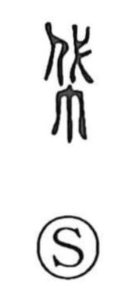

袋

Kun: fukuro | On: tai, dai
bag ・ sack ・ pouch
Explanation
袋 is a phono-semantic character: the clothing element indicates a textile object, while the phonetic 代 supplies the on-reading (tai/dai). Classical glosses already link this sound to the idea of a bag—Shuowen Xinfu notes “tai” as a bag, and Shuowen cites 縢 (to bind) in the same sense. Words such as 帶 and 勝 were once connected with this same root notion of a tied cloth container. Closely related is 囊, which in its ancient form was written like 東, depicting a cloth sack gathered and bound at both top and bottom. The graph 袋 itself came into regular use from the Sui–Tang period onward and straightforwardly means a bag; in Japan it appears in everyday items such as 足袋, the cloth “tabi” socks shaped like little bags for the feet.